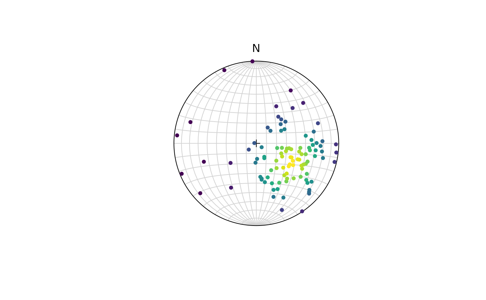

Density and random generation for the spherical normal distribution with mean and kappa.
Usage
rvmf(n = 100, mu = Vec3(1, 0, 0), k = 5)
dvmf(x, mu, k = 5)Source
Adapted fom rotasym::r_vMF() and rotasym::d_vMF()
See also
runif.spherical() for alternative algorithms to generate uniform
distributed samples on a sphere, rkent() for Kent distribution,
rfb() for Fisher-Bingham distribution.
Examples
set.seed(20250411)
x <- rvmf(100, mu = Line(120, 50), k = 5)
dvmf(x, mu = Line(120, 50))
#> [,1]
#> [1,] 0.3539638684
#> [2,] 0.3456838512
#> [3,] 0.3298219243
#> [4,] 0.2878725467
#> [5,] 0.3416723702
#> [6,] 0.3087497280
#> [7,] 0.5029607511
#> [8,] 0.6655797562
#> [9,] 0.7907738489
#> [10,] 0.0037954383
#> [11,] 0.6941862756
#> [12,] 0.2215063746
#> [13,] 0.6595268453
#> [14,] 0.0005060201
#> [15,] 0.7195109535
#> [16,] 0.0733917426
#> [17,] 0.6958226791
#> [18,] 0.6722856633
#> [19,] 0.6780233707
#> [20,] 0.3776313507
#> [21,] 0.6946564573
#> [22,] 0.5766307194
#> [23,] 0.7759395592
#> [24,] 0.7901589106
#> [25,] 0.6272959464
#> [26,] 0.4489849106
#> [27,] 0.6963171147
#> [28,] 0.2077329205
#> [29,] 0.4884814860
#> [30,] 0.3942015612
#> [31,] 0.7024778981
#> [32,] 0.0009551707
#> [33,] 0.7484831155
#> [34,] 0.6860774055
#> [35,] 0.0991952887
#> [36,] 0.5446196691
#> [37,] 0.2645460130
#> [38,] 0.4137899293
#> [39,] 0.2787976931
#> [40,] 0.0008812961
#> [41,] 0.3279258107
#> [42,] 0.0575149554
#> [43,] 0.3095756565
#> [44,] 0.6331699361
#> [45,] 0.5687413756
#> [46,] 0.3877695235
#> [47,] 0.7037452677
#> [48,] 0.6272525066
#> [49,] 0.4839627489
#> [50,] 0.0074576675
#> [51,] 0.0703558313
#> [52,] 0.2590478470
#> [53,] 0.1393608634
#> [54,] 0.6407961152
#> [55,] 0.1680944634
#> [56,] 0.1146974769
#> [57,] 0.6714866658
#> [58,] 0.3713923453
#> [59,] 0.3256224108
#> [60,] 0.2225528050
#> [61,] 0.7945046115
#> [62,] 0.0302259400
#> [63,] 0.7334812584
#> [64,] 0.7544944369
#> [65,] 0.6794339163
#> [66,] 0.7217814257
#> [67,] 0.0848180617
#> [68,] 0.7887117130
#> [69,] 0.0003715124
#> [70,] 0.3587100009
#> [71,] 0.4406101476
#> [72,] 0.1213333354
#> [73,] 0.6950889621
#> [74,] 0.4436411860
#> [75,] 0.5731018054
#> [76,] 0.1131717267
#> [77,] 0.3333639706
#> [78,] 0.4203673749
#> [79,] 0.7774430701
#> [80,] 0.3796139755
#> [81,] 0.2822486781
#> [82,] 0.1697738070
#> [83,] 0.1937737433
#> [84,] 0.7613930727
#> [85,] 0.6273298854
#> [86,] 0.2486908813
#> [87,] 0.4865129857
#> [88,] 0.6431243513
#> [89,] 0.5875447305
#> [90,] 0.3346200855
#> [91,] 0.5347723283
#> [92,] 0.0008189982
#> [93,] 0.4533583635
#> [94,] 0.4058711922
#> [95,] 0.4600893515
#> [96,] 0.4565435898
#> [97,] 0.6740864570
#> [98,] 0.1553085088
#> [99,] 0.2685622708
#> [100,] 0.4133662866
plot(x)
